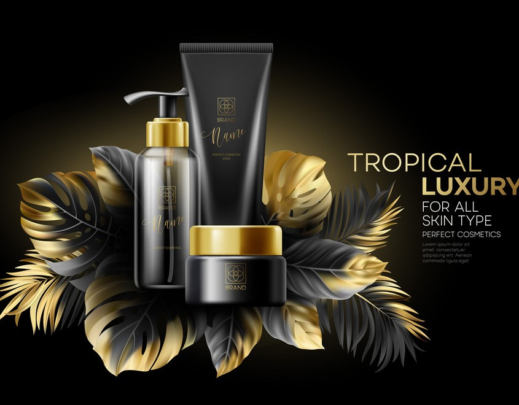

About Us

Cosmetics designed for skin care can be used to cleanse, exfoliate and protect the skin,
as well as replenishing it, through the use of cleansers, toners, serums, moisturizers,
and balms. Cosmetics designed for more general personal care, such as shampoo and body
wash, can be used to cleanse the body. Cosmetics designed to enhance one's appearance
(makeup) can be used to conceal blemishes, enhance one's natural features (such as the
eyebrows and eyelashes), add color to a person's face and—in the case of more extreme
forms of makeup used for performances, fashion shows and people in costume—can be used
to change the appearance of the face entirely to resemble a different person, creature
or object. Techniques for changing appearance include contouring, which aims to give
shape to an area of the face.
Cosmetics can also be designed to add fragrance to the body.cosmetics trade is one of the most active in the world. There are many advantages in using nanoparticles, the main advantages of which are the delivery of interest active cosmetic ingredients into the skin, greater stability, lower quantities and minor toxicological mechanisms. Nanotechnology has high efficiency in cosmetics. Materials on the nanometre scale have a high surface area and consequently have an enhanced effect. In many cases, nanotechnology in cosmetics occurs in the form of nanoparticles, which can penetrate more deeply into the skin, as they go beyond more epithelial layers, enhancing hydrating, antiaging and protective effects (Carrouel et al., 2020). An exciting way to apply nanotechnology in cosmetics is the use of nanoencapsulated materials
Cosmetics can also be designed to add fragrance to the body.cosmetics trade is one of the most active in the world. There are many advantages in using nanoparticles, the main advantages of which are the delivery of interest active cosmetic ingredients into the skin, greater stability, lower quantities and minor toxicological mechanisms. Nanotechnology has high efficiency in cosmetics. Materials on the nanometre scale have a high surface area and consequently have an enhanced effect. In many cases, nanotechnology in cosmetics occurs in the form of nanoparticles, which can penetrate more deeply into the skin, as they go beyond more epithelial layers, enhancing hydrating, antiaging and protective effects (Carrouel et al., 2020). An exciting way to apply nanotechnology in cosmetics is the use of nanoencapsulated materials
- Beyond physical health, cosmetics can help to improve our mood
- Enhance our appearance and boost our self-esteem
- They can also help to exhibit personal style